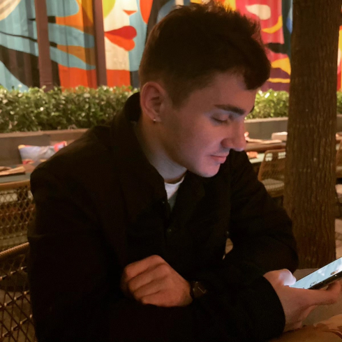

Experiências
- EMPÓRIO RESTAURANTES - Maître
02/07/2024 - Atual
Supervisionar a equipe de garçons, barmans, e demais funcionários do salão.
Lidar com quaisquer problemas ou reclamações que os clientes possam ter, buscando soluções rápidas e eficazes para garantir a satisfação destes.
Relacionamento com Clientes.
Participar no treinamento e desenvolvimento contínuo da equipe, assegurando que todos os membros estejam alinhados com os padrões de serviço do restaurante.
- OUTBACK STEAKHOUSE BRASIL - Garçom
(1 ano e 7 meses)
Relacionamento diário, dinâmico e direto com os clientes.
Trabalho de alta pressão e rotatividade.
Fui reconhecido com o perfil para o quadro de gerentes.
Responsável pelos treinamentos de fechamento de loja.
Resolução dinâmica de problemas.
Outros serviços inerentes ao cargo de garçom.
- DIA BRASIL SOCIEDADE LTDA - Montador
(8 meses)
Mudanças completas e parciais de layout.
Responsável pela liderança da equipe.
Organização completa de loja.
Viagens e hospedagens diárias pela empresa, cobrindo
toda região do interior de São Paulo.
Estudos
- Graduação - Unimetrocamp - 3° Semestre
2023 - 2029
Engenharia de Software
- ONE - Oracle Next Education - Fase 3
- Colégio Politécnico Bento Quirino - Trancado -
01/2012 - 12/2012
Técnico em TI
